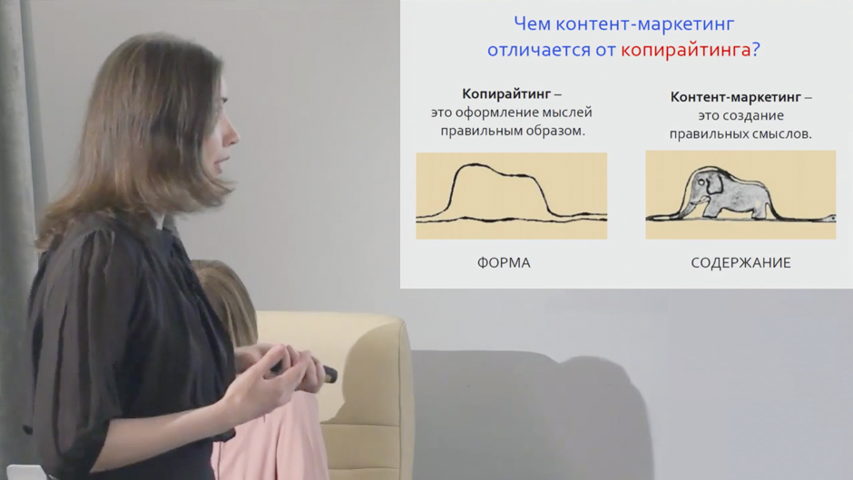
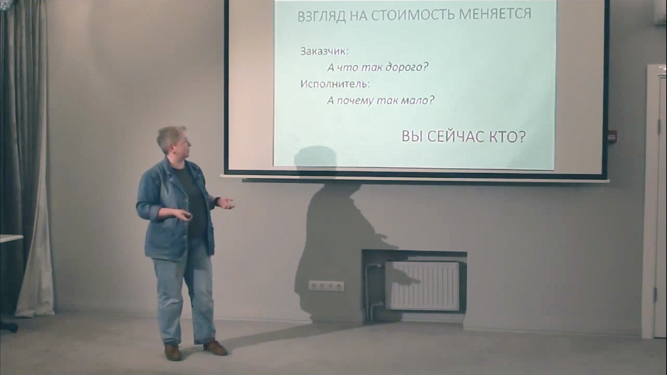

Тема 1: стратегия контент-маркетинга
Продолжительность
50 мин
Включает
Видеозапись
Аудиозапись
Презентацию
Ответы на вопросы
Продолжительность: 50 мин
Как разработать контент-стратегию
-
Стратегия контент-маркетинга.
Как контент помогает продавать. Для чего нужен сценарий. Анализ аудитории. Как составить портрет потенциального клиента. Как понять, что контент работает. Чем контент отличается от рекламы и копирайтинга.
-
Привлечение внимания.
Как победить в борьбе за внимание. Каким должен быть заголовок. Почему продающие фразы не работают.
-
Формирование потребности.
Вопросы и желания клиента. Как работать с возражениями.
-
Продажа.
Как покупатель принимает решение, за что он платит на самом деле. Какие отзывы работают лучше всего.
-
Повторные продажи.
Жизненный цикл клиента. Что нужно, чтобы клиент пришел снова. Какой контент помогает удерживать клиента.
Вопросы предпринимателей
-
Как привлечь внимание «холодного» клиента?
-
Должен ли контент вызывать только позитивную реакцию?
-
Как быстро контент начнет продавать?
-
Как быть, если повторные покупки бывают редко?
-
Может ли хорошая статья спасти плохой продукт?
-
На какие вопросы читателей должен отвечать контент?
«На пути к решению о покупке у клиента возникает множество вопросов. Задача вашего контента — ответить на все эти вопросы и снять возражения.
Прежде чем писать текст, подумайте, кого вы хотите привлечь. Создайте портрет клиента: почувствуйте его боль, его проблемы, постарайтесь понять стиль его жизни и образ мышления. И только потом пишите»

Тема 2: элементы контент-маркетинга
Продолжительность
60 мин
Включает
Видеозапись
Аудиозапись
Презентацию
Ответы на вопросы
Продолжительность: 60 мин
Как вовлечь нужную аудиторию и построить воронку продаж
-
Форматы.
Как собирать базу подписчиков: методички, полезная рассылка, вебинары, видеоуроки. Как выстроить систему продаж при помощи рассылки.
Что такое магнит трафика, как он работает.
-
Каналы.
Основные каналы привлечения клиентов. Под какие поисковики выгоднее настраивать сайт. Как выяснить, что люди ищут в ютьюбе и создать видео под поисковый запрос.
-
Носители.
Лендинг, посты, письма, файлы. Структура продающей страницы.
-
Инструменты.
Три главных инструмента привлечения клиентов. Как вовлечь клиента и начать с ним взаимодействовать. Как расширить целевую аудиторию. Когда лучше использовать контекстную рекламу, а когда — таргетированную. Прямые и косвенные запросы.
-
Система.
Схемы воронок продаж для простых и сложных продуктов. Алгоритм создания контентной стратегии.
Вопросы предпринимателей
-
Нужна ли простым продуктам воронка продаж? Какие этапы можно исключить?
-
Нужно ли удерживать клиента при одноразовых продажах?
-
Как не слить рекламный бюджет?
-
Как понять, сложный у меня продукт или простой?
-
Что больше подходит для взаимодействия с клиентами в соцсетях: группа или страница?
-
В каких случаях нужна рассылка, а когда без нее можно обойтись?
-
Чем заинтересовать покупателей товаров сиюминутного спроса? Например, любителей пива.
«Главная задача соцсетей, блогов и вебинаров, рассылок — вовлечение. Клиенты к вам привыкают и становятся ближе.
При помощи полезных материалов вы постепенно готовите их к покупке товара или услуги»
Продолжительность
60 мин
Включает
Видеозапись
Аудиозапись
Презентацию
Ответы на вопросы
Продолжительность: 60 мин
Как правильно составить контент-план
-
Как не надо.
Список идей, готовый шаблон, календарный план, золотое правило 60/30/10 — почему все это не работает. Как научиться регулярно публиковать материалы.
-
Система.
Структура контент-плана. Как привязать план к целям. Как с помощью плана управлять публикациями и отслеживать эффективность каналов. Программы для создания контент-плана.
-
Контент-матрица.
Как при помощи матрицы генерировать идеи новых статей. Как понять, о чем и для кого писать.
Вопросы предпринимателей
-
От чего зависит частота публикаций?
-
Как часто нужно пересматривать план?
-
Нужно ли для каждого канала составлять отдельный план?
-
Как составить контент-план для простого продукта? Например, для дрожжевого хлеба.
-
Нужно ли включать в план развлекательный контент и демотиваторы?
«Вы уже написали на все хорошие темы. На следующий день вам нужно делать следующую статью, а вы не знаете, о чем написать. Именно для этих случаев нужен контент-план.
Когда вы пишете только про то, от чего вас прет — это хорошо. Но это хаос. Все это сильно зависит от вдохновения. Завтра вам эта тема надоест, и все закончится.
Поэтому сначала сосредоточьтесь на том, что вам нравится, а потом сделайте из этого контентный план»

Тема 4: бюджет контент-маркетинга
Продолжительность
50 мин
Включает
Видеозапись
Аудиозапись
Презентацию
Ответы на вопросы
Продолжительность: 50 мин
Сколько стоит контент-маркетинг
-
Посчитаем.
Что выгоднее — писать статьи силами сотрудников или нанять стороннего автора. Стоит ли искать автора на биржах копирайтеров. Если предприниматель решил писать сам. Сколько стоит автоматизация. За что берет деньги специалист.
-
Оплата.
За что платить: за объем, за количество статей или за часы работы. С какими проблемами сталкиваются заказчики и исполнители. Всегда ли профессионал стоит дорого. Чего ожидать от работы за 100 ₽/1000 знаков. Стоит ли поощрять хороших авторов.
-
Бюджет.
Как спланировать затраты. Стоит ли искать автора самому или обратиться в агентство. Во сколько обходится экономия. Статья — это не только текст: затраты на иллюстрации, верстку, распространение.
Вопросы предпринимателей
-
Где искать копирайтеров?
-
Дадут ли скидку, если закажем много статей?
-
Расскажите о профессиональном росте автора
-
Стоит ли доверять копирайтеру писать о сложном продукте?
-
Как оценить, насколько хорошо автор пишет продающие тексты?
-
Как новичку без опыта начать писать статьи?
-
Нужно ли готовить для копирайтера техническое задание, как оно выглядит?
-
В чем разница между автором и копирайтером?
-
Как защитить свои тексты от воровства?
«Почему выгодно хорошо платить копирайтеру? Потому что он на эти деньги живет. Если автору не хватает на жизнь, он вынужден набирать много заказов и, не вникая глубоко в тему, штамповать как можно больше статей. При таком раскладе автор не сможет много времени посвятить вашей задаче.
Когда вы заказываете копирайтеру статью, вы платите не за знаки. Вы платите за ответственность и вовлеченность»